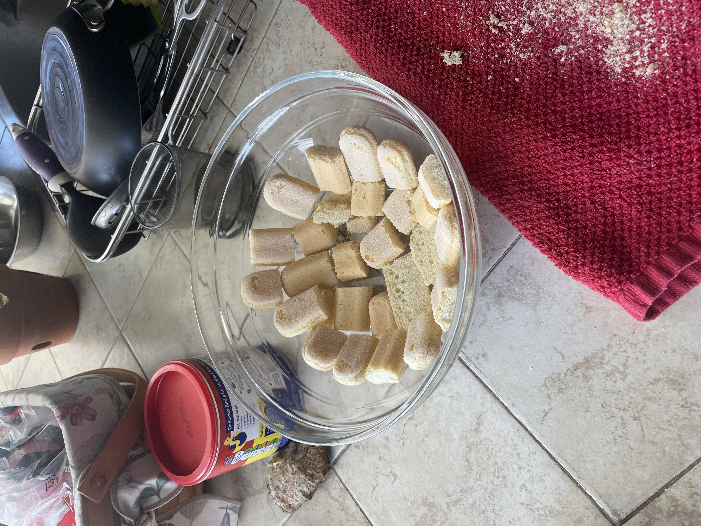
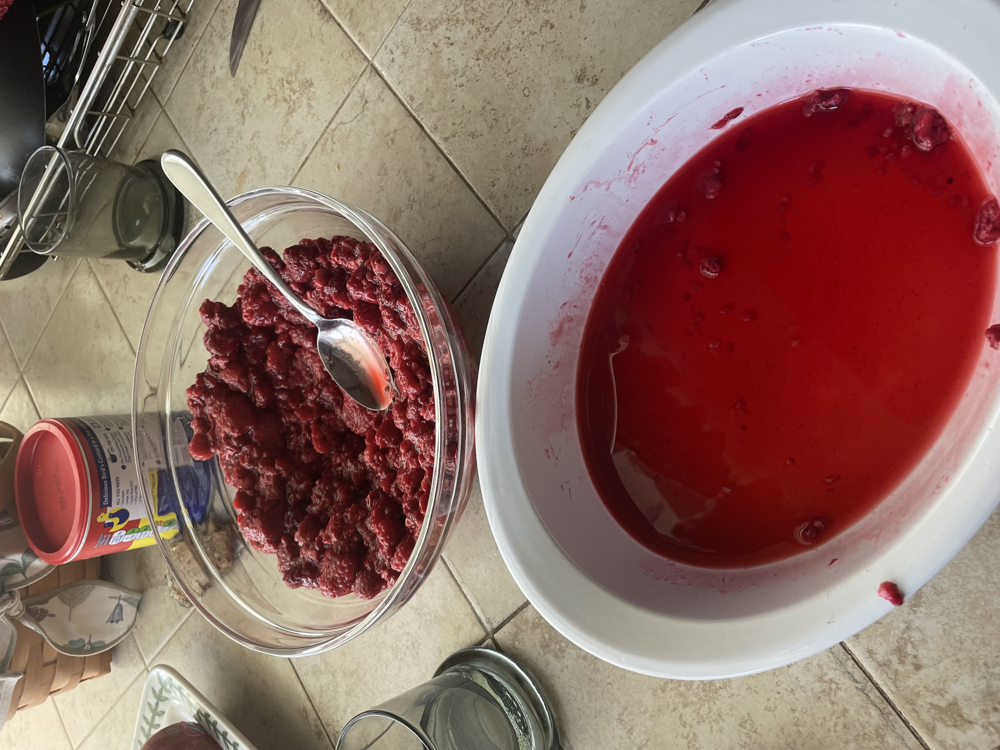
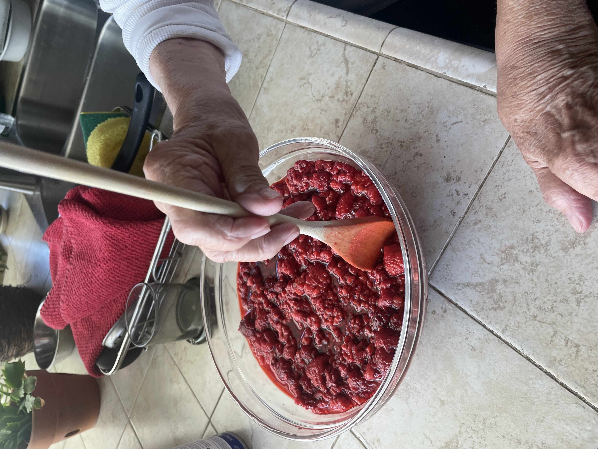
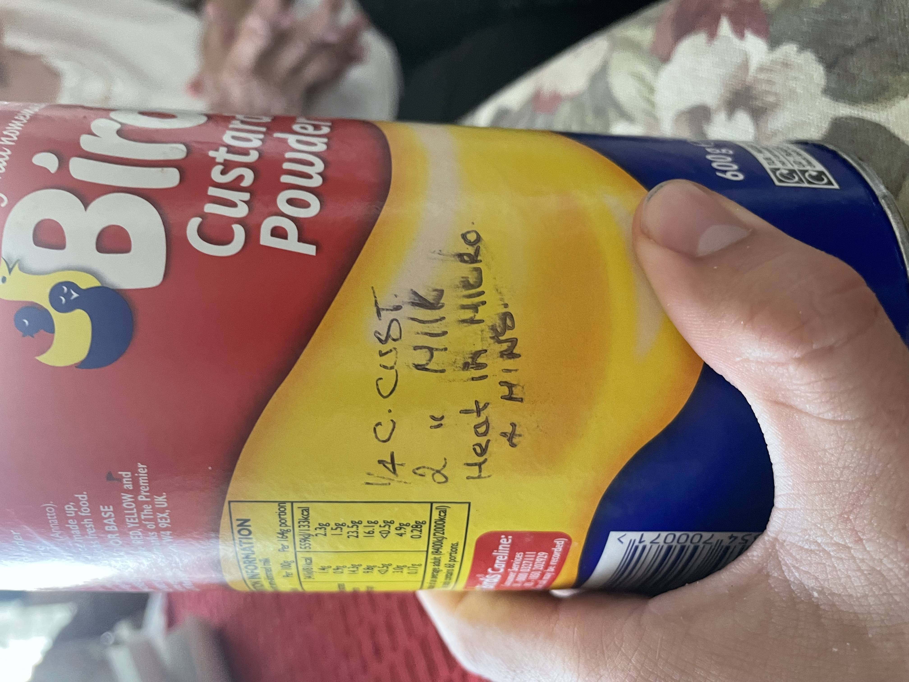
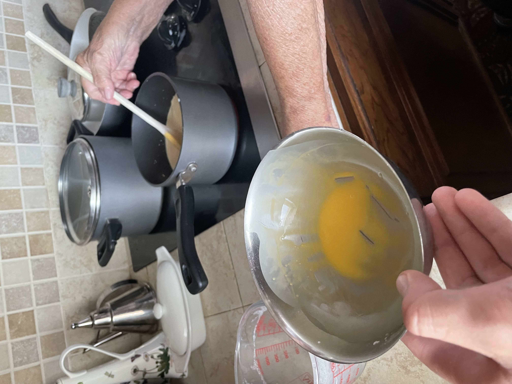
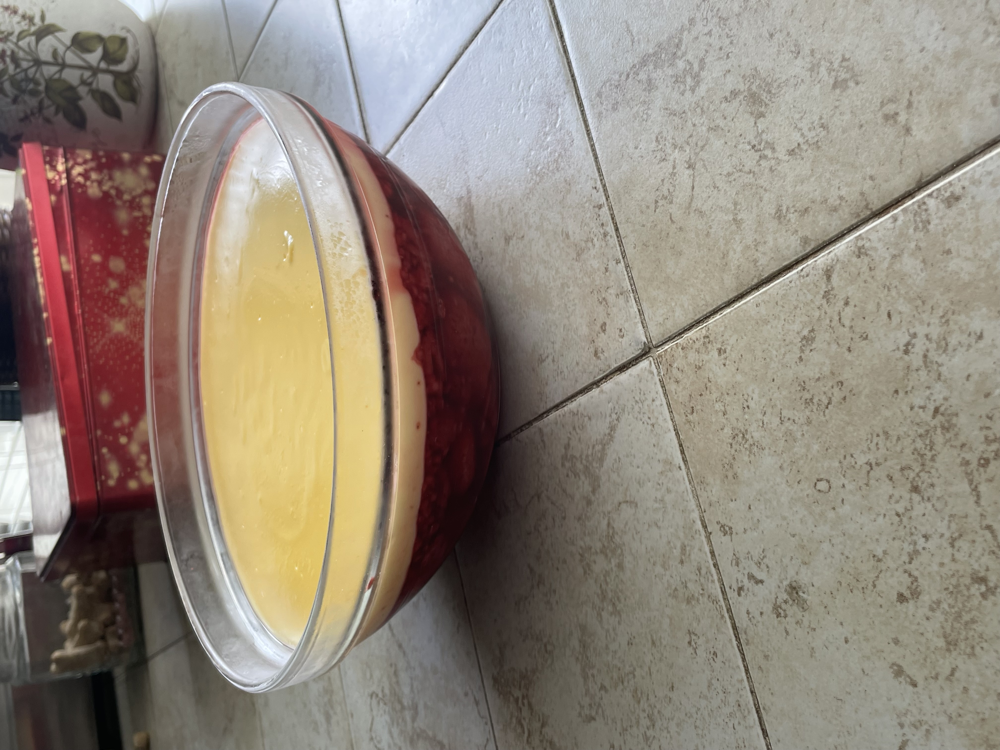
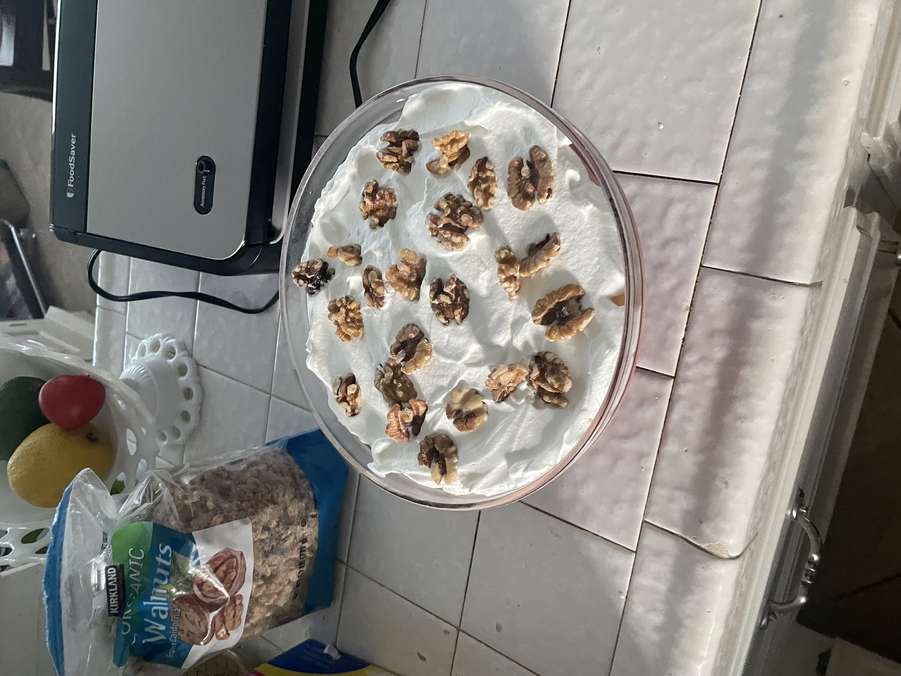

Traditional Trifle Recipe
Required Ingredients
- Ladyfingers
- Frozen Raspberries
- Raspberry Jello
- Bird's Custard Powder
- Sugar
- Milk
- Heavy Whipping Cream
- Walnuts
- Sherry
Instructions
Day 1
- Let frozen raspberries defrost in a bowl for 30-60 minutes and keep the juice
-
Split ladyfingers in half lengthwise and break into thirds. Place ladyfingers up to the bottom third of the bowl

- Pour light sherry over ladyfingers
-
Mix three dessert spoons of sugar into raspberries and lightly mix as to not destroy the raspberries. Once mixed, spoon raspberries over ladyfingers

- Add two cups of boiling water to jello mixture and pour the juice from defrosted raspberry into the mixture, stir. Do not add cold water.
-
Pour mixture into a glass bowl and gently push down the top layer with a spoon

- Cover in plastic wrap and keep in the fridge overnight
Day 2
-

Stir a small amount of milk into 1/4 cup of custard powder to form a paste
- Heat 2 cups of milk in the microwave for 4 minutes and then transfer it into a pot on the stovetop over medium heat
-
Slowly mix in the paste while stirring the milk in the pot. Stir until thickened and boiling begins, immediately take it off the heat and stir in 3 dessert spoons of sugar

-
Slowly pour the custard mixture over the trifle, let it sit for 5 minutes, cover in plastic wrap, and store in the fridge overnight

Day 3
- Let a new glass bowl chill in the refrigerator for 20 minutes
- Whip 1/2 pint of heavy whipping cream until ready
-
Spoon onto the trifle, place walnuts on top
